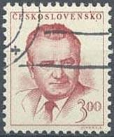
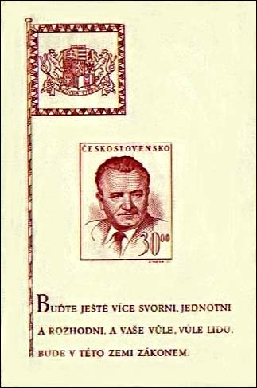
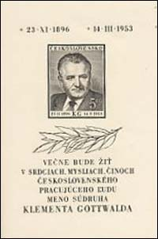
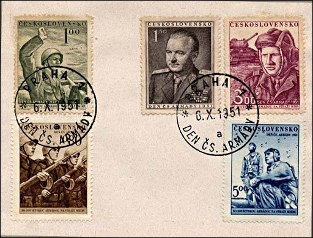
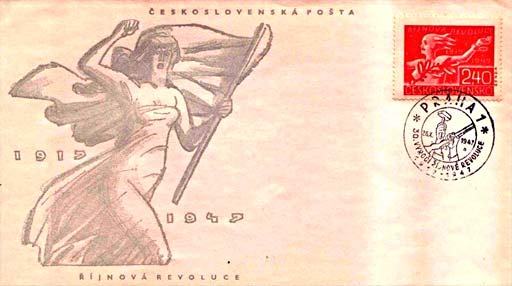
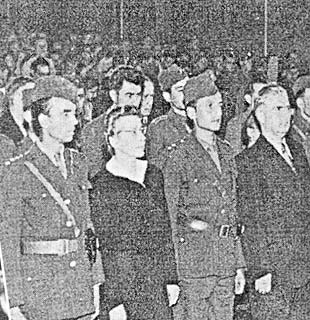

We go to learn from the Russian Bolsheviks
how to twist your necks.
Klement Gottwald, 1929, speech to the Parliament.
Klement Gottwald became president of Czechoslovakia, after Eduard Benes resigned, on June 14th 1948, and what rapidly became a totalitarian regime was now in place. During his presidency, two hundred and thirty death sentences were handed out, and almost two hundred thousand so-called enemies of the state were sent to prison or labour camps. Jiri Kocian: "The period from 1948 to shortly after Gottwald's death was probably the harshest of the Communist regime. Out of the two hundred and thirty death sentences, about one hundred and eighty people were executed, but this does not include people who were shot while trying to escape from the camps, were beaten to death for minor offences in the camps, or died due to the terrible conditions there. It also, of course, does not include the lives that were ruined, children who weren't allowed to study because of their parents, families who suffered during the political purges and mass emigration to escape from the Communists. Gottwald is directly responsible for most of what took place after the coup."
It was not only the common people who suffered during the purges. Klement Gottwald turned on members of his party, including some of his closest allies, purging the party in a similar way to another Communist dictator, Joseph Stalin. Source: http://www.radio.cz/en/article/36683
|
 |
 |
|
 |
In Michel the right sheet is the No. 556 (Block 10), issued 23rd November 1948, print run 439,000 sheets. Dedicated to the 52nd birth anniversary of Klement Gottwald (1896 -1953). Scott No. 367. "You should be more unanimous, consistent resolved, and your will, the will of the people will in this land become law." (translation thanks to Zdenek Jizba, on RCSD).
The sheet on the left side is Scott 587, issued in 1953, and it is dedicated to the death of the president Gottwald. Print run: 309,000 sheets.

The above cover presents the set issued in 1951 and dedicated to the army and to its highest commander, the Communist party chief Gottwald.
The opening of the Soviet and Czech archives has shown the perversity of Czech communists. In December 1929 their chief, the deputy Gottwald, gave the following answer in a speech to the Czechoslovakian Parliament: "We are the representatives of the Czech proletariat and our revolutionary headquarter really is Moscow. And we go to learn there, you know what? We go to learn from the Russian Bolsheviks how to twist your necks. You know that the Russian Bolsheviks are masters of this."

The above stamp and FDC, issued in 1947, commemorate the 30th anniversary of the Communist putsch in Russia. Quite sexy, isn't it? It is just a small example of the power of Soviets over the Czechoslovakia, and over its philately too. Another example of this power is of a woman who fought against the Nazis (the former occupants of Czechoslovakia) and who was imprisoned by them during five years. Her name was Milada Horáková. She was the victim of the first "big show", put together by the Czech Communists and their "Soviet counsels", actually high persons in charge of special services, who managed the terror together with their Czech comrades. The scenario of the process was prepared with a meticulous care, like confessions" learned by the prisoners by heart, and a big propaganda machine that worked for and around the show.

The result was that Milada (shown above facing the State Court, that will sentence her to death) was hanged, after having confessed all her alleged crimes, The protests of a few voices from the free West, among them of the great physicist Albert Einstein, were totally ignored as well in the East as in the West. After: "Le livre noir du communism", Robert Laffont, 1997. Milada died after being strangled for more than 13 minutes. Her cremated ashes were never returned to her family. Source.
Hint: point to the images with the mouse pointer for more information.
|
Published:
07/27/03. Revised:
1/10/2024
. |